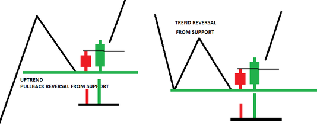
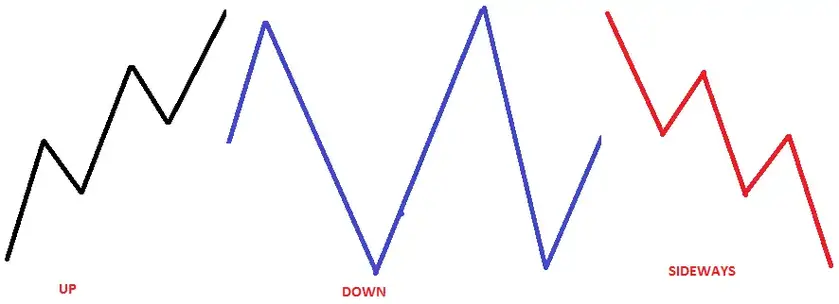
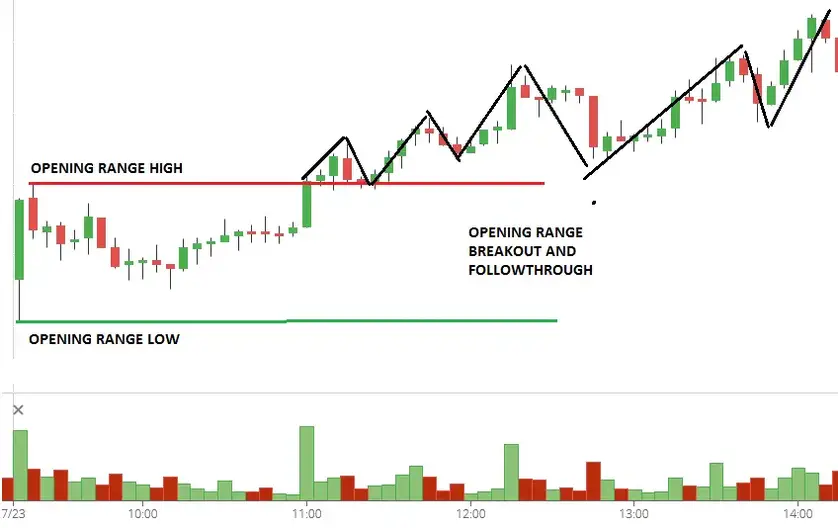
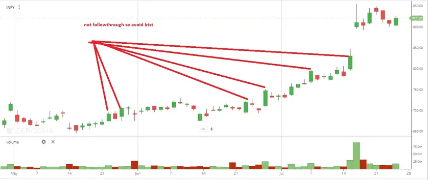

BTST (Buy Today Sell Tomorrow) TRADING STRATEGY
In this article, I will discuss the BTST Trading Strategy (Buy Today, Sell Tomorrow) in detail. Please read our previous article discussing the Relative Strength Index Trading Strategy. This article will cover the complete details about the BTST (Buy Today, Sell Tomorrow) TRADING STRATEGY as follows:
- Price Action-Based Strategy
- A clear rules-based system with defined Entry, Target & Stop Loss
- Clear rules for stock picks tell clearly which stock to Trade
WHAT is BTST (Buy Today Sell Tomorrow) Trading Strategy?
BTST (Buy Today, Sell Tomorrow) is a method that allows customers to sell shares before they are credited into a Demat account or take the delivery of shares. The reverse of BTST is called STBT, i.e., Sell Today, Buy Tomorrow.
It’s a popular trading strategy in the stock market where a trader buys shares one day and sells them the next day. This strategy is used to capitalize on expected overnight price movements in the stock market. Here’s how it generally works:
- Market Research: Traders conduct research to identify stocks that are likely to experience positive price movements overnight. This research is based on technical analysis, market trends, news, or other relevant factors.
- Buying Shares: On the trading day (Day 1), the trader purchases shares of the chosen stock. This is done during the regular market hours.
- Holding Overnight: The trader holds onto these shares overnight, betting on the expectation that the stock price will increase by the next day.
- Selling Shares: On the following day (Day 2), the trader sells the shares, ideally at a higher price than the purchase price. This sale is also executed during regular market hours.
- Profit or Loss: The difference between the buying and selling price, minus any transaction costs, determines the trader’s profit or loss.
Advantages of BTST Trading:
- Opportunity for Quick Gains: Since the holding period is very short, traders can make quick profits if their predictions are accurate.
- Capitalizing on Overnight News or Events: This strategy can be particularly effective in reacting to after-hours news or events that may positively impact the stock price.
Risks and Considerations:
- Market Volatility: Prices can fluctuate unexpectedly overnight, leading to losses.
- Limited Research Time: Decisions must be made quickly, often with limited information.
- Additional Costs: Some markets may have higher transaction costs for such short-term trades.
Traders need to research and understand the risks involved in BTST trading thoroughly. It’s not suitable for all investors, especially those with a low tolerance for risk or a limited understanding of the stock market.
Strategy for BTST trading
Change of Guard (COG)
LOGIC. Change the direction of the MINOR move
For more information, read Candlestick Pattern Analysis
COG ENTRY Either
- Pullback Reversal from the support level
- Trend reversal from the demand zone
Criteria for long
- Previous day red candle should be small
- Price at the clear support level
- Next green candle(current t day) price closed above the red candle(previous day)
- CURRENT DAY CANDLE MAY GAP UP OR GAP DOWN DOESN’T MATTER
- VOLUME GREATER THAN THE PREVIOUS DAY


Breakout Strategy
Here, I discussed the Breakout Trading Strategy. read as logic and condition all are the same. Just move to a daily time frame.
- Price should close below clean support and above the resistance level
- More condition. Go through the above article
Stock Selection Conditions for both BTST Trading Strategy
We will study the following parameters to select stock
- Attempted Direction (Up, Down, Sideways) or intraday structure
- Volume Generated (High, Low, Unchanged)
- Closing swing and volume
- Data(future and option)
By studying the above factors, we can get a tight grip on what the smart money was trying to achieve and whether that attempt was successful. And Possibly the trend for the next day
Internal structure
Attempted Direction (Up, Down, Sideways)

Only select those stocks whose intraday structure is either trending up or down.
Opening range and follow-through

Select those stocks whose opening range got a breakout and follow through
CLOSING SWING and VOLUME
- Suppose the market closes with an extremely unusual discount (closing at a day low) OR excess premium (closing at a day high). In that case, it gives the trader a loud and clear signal that continuation is likely the next day.
- The last SWING or closing swing often tells the truth about how strong a trend truly is. “Smart money “shows its presence in the last SWING or closing swing, continuing to mark positions in their favor. If a market has strong closes (closing at a day high), look for an up-trend to continue.
- High volume on the close swing implies continuation the next morning in the direction of the closing swing.
Data
Future open interest
2) Increase in open interest with an increase in price during the last swing of the trading day. It shows the strength of the trend
Option data
- Long buildup or short buildup
- Avoid short covering or long liquidation move
Note-check the option chain video for option chain analysis, or you can read it
Next support and resistance level
- Where is immediate support and resistance or supply and demand zone by technical analysis
- Options support and resistance level
Stock selection condition for BTST strategy
- CLEAN HEALTHY CANDLE
- Today’s price is trading above the previous day’s high(for a long)
- Trending internal structure
- The last swing must be trending and close at the day high (for a long)
- Last swing volume and open interest increasing,
- Technical analysis and Options data suggest no nearby support or resistance level.
Odd enhancer
INDEX
Identify what the general market or index is doing.
- Trending
- At support or resistance zone
First, Identify the support and resistance zones in the index (nifty). If markets closed near the support zone, I would know to look for opportunities to buy the next day as the price was likely to rally from that support zone
Sector selection
look at chart sectors to find some also trading near the support zone, as those sectors would likely rally from that support zone with the index (nifty ) market the following day. Out of the few sectors, I would always find one or two that were set up very well with the broad market (index).
- If the index is bullish, select a strong sector for BTST
News stock
AVOID frequently NEWS BASED SECTOR (LIKE PHARMA)
Check history
- CHECK the history of the stock and find whether the stock can move on consecutive strong days. if yes, then select

Ol-OH
- If the stock opens with an open high or open low
- Add confidence if open with open low or open high
Exit
- Most of the time, these scripts are opened the next day with a gap up .profit should be booked within 5-10 minutes in the next session.
- If the price moves strongly from the open in the direction of your entry, you can trail your stop loss.
- If the market closes with a strong premium (closing at a day high) but opens weak (gap down)the next morning, the odds favor that the first move will be to the upside to test the previous day’s high(fill the gap). If the market closes weak, and the futures close with a discount (close at the day low), yet the market gaps up the following morning, the first move should be a retest down to attempt to fill the gap.
- Suppose the price is a gap down (you took BTST).YOU can exit immediately or wait for the opening range and place sop loss or wait for the first five-minute candle and place stop loss. It totally depends on your risk.
Entry
BTST Trading Strategies:
BTST stands for “Buy Today, Sell Tomorrow.” It’s a trading strategy where a trader buys stocks a day before and sells them the next day, taking advantage of the overnight price movement. This strategy is often used in the stock market, where the settlement cycle allows for such trades. Here’s a simple approach to implementing a BTST strategy:
1. Stock Selection:
- Volume: Look for stocks with high trading volume to ensure liquidity.
- News & Events: Identify stocks with positive news releases or events after market hours that could lead to a gap up the next day.
- Technical Analysis: Choose stocks showing a strong closing, preferably at or near the day’s high, indicating bullish momentum.
- Market Sentiment: Overall, market sentiment should favor your selected stocks.
2. Entry Strategy:
- Timing: Execute the buy order in the last part of the trading session if the stock still shows strength.
- Price Action: Confirm the stock is not just spiking on a whim but has sustained buying interest.
- Position Sizing: Determine the size of the position based on risk management rules.
3. Exit Strategy:
- Pre-Market Analysis: Check pre-market trends to indicate how the market will open.
- Opening Price: If the stock opens higher, assess the market situation. Is the broader market opening strong? Are there any new developments?
- Profit Booking: Have a clear target in mind for profit booking, and sell the stock when your target is achieved or during the first 15 to 30 minutes of market opening, as this is when the largest moves often occur.
- Stop Loss: If the trade goes against you, have a stop loss to exit the trade.
4. Risk Management:
- Stop Loss Orders: Always use stop-loss orders to limit potential losses.
- Avoid Overexposure: Do not put a significant portion of your capital into a single BTST trade.
- Position Sizing: Properly size your positions to manage risk effectively.
5. Market Research:
- Earnings Calendar: Be aware of earnings release dates, as stocks can have significant overnight moves after earnings are announced.
- Economic Indicators: Be mindful of economic events or data releases scheduled for the next day, which can affect market sentiment.
Advantages of BTST Strategy:
- Time Efficiency: This strategy doesn’t require monitoring the market throughout the day.
- Overnight Gains: Traders can capitalize on gains from significant overnight price movements.
Disadvantages of BTST Strategy:
- Gap Down Risk: The stock may open lower than the previous day’s close, which could lead to losses.
- Limited Research Time: Since decisions are made towards the end of the trading day, there’s less time to research, and one might have to make quick decisions.
- Regulatory Changes: Always be aware of the current regulations related to securities settlement to avoid any settlement risk.
Legal and Market Considerations:
- Settlement Rules: Ensure that the BTST trades comply with the settlement rules of the stock exchange.
- Brokerage House Rules: Some brokerage firms may have specific rules or fees for BTST trades.
BTST trading can be profitable with thorough research and strict discipline, especially in risk management. However, it’s important to remember that such strategies come with their own set of risks and should be approached cautiously, particularly by inexperienced traders.